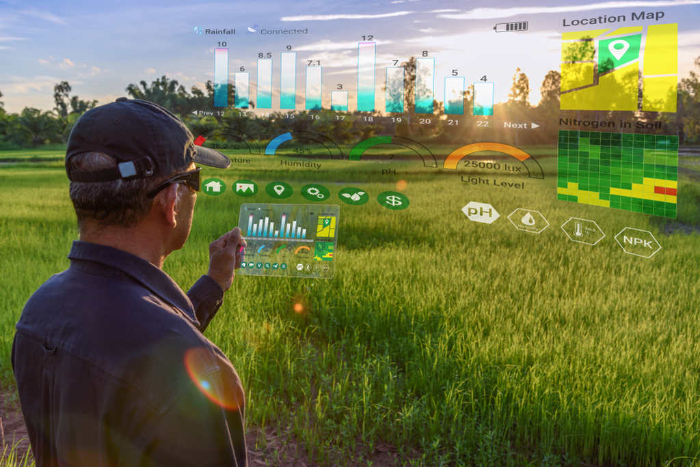

Equipamentos Usados na Agricultura de Precisão

Drone
Os drones são usados para monitoramento aéreo, capturando imagens detalhadas das plantações e identificando áreas problemáticas.

Sensores de Solo
Esses sensores medem a umidade, temperatura e nutrientes no solo, auxiliando nas decisões de irrigação e fertilização.

GPS Agrícola
Sistemas de GPS ajudam a guiar máquinas agrícolas com alta precisão, garantindo o plantio e colheita eficientes.

Software de Gestão
Softwares especializados processam os dados coletados para otimizar o uso de recursos e planejar as atividades agrícolas.